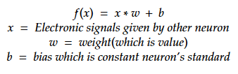
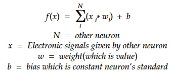
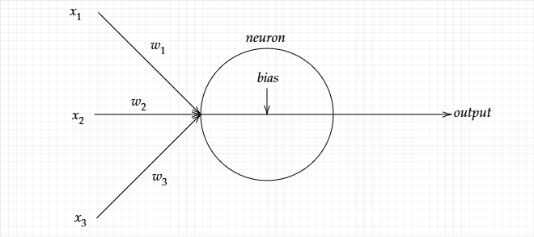
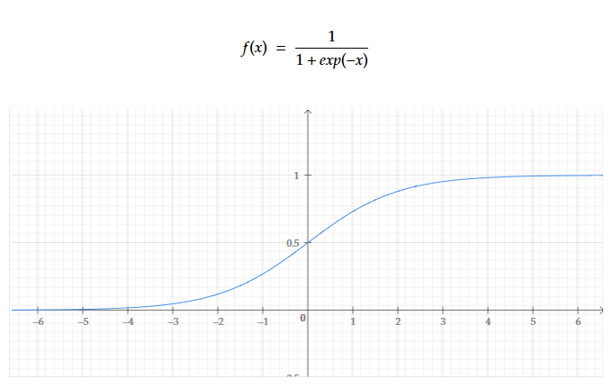
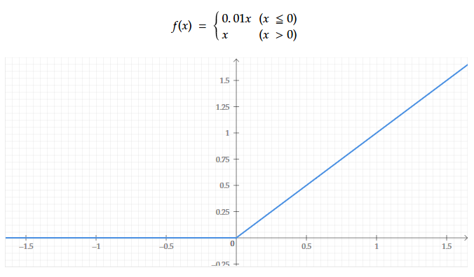
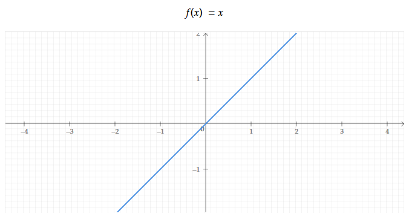
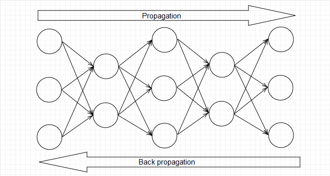
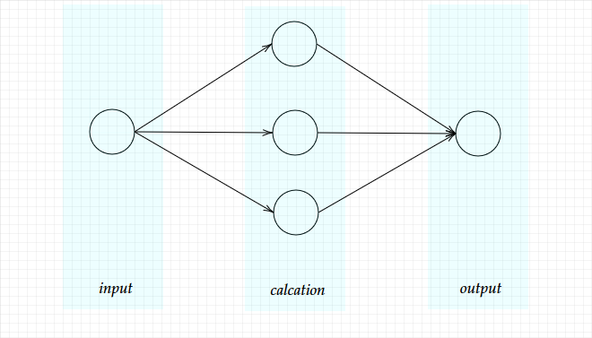
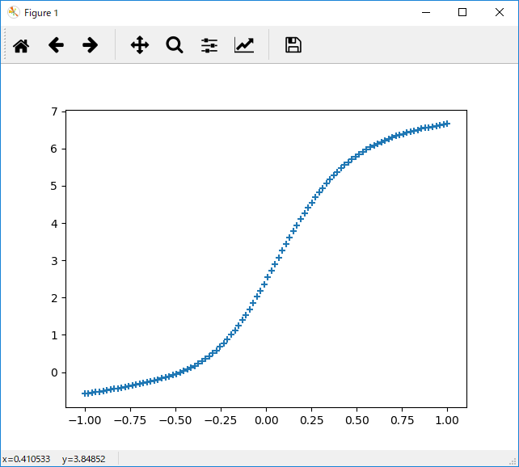

Hello , DeepLearning !!
What is DeepLearning?
DeepLearning is one of AI(Artifical Intelligence). It is imitated brains of living beings. Brains of living beings is made up a lot of a group of neuron. When neuron receive eloctronic signals, the neuron give electronic signals to another neuron. This mechanism is used in the brain.
DeepLearning can be implemented to reproduce neuron's mecanism.
What is neuron?
We can't talk about DeepLearning without neuron. But neuron's nechanism is simple. Look at Figure01.

Figure01
If neuron receive electronic signals to another neuron above the standard, the neuron will be excitement and give electronic signals another neuron. But each neuron has difficult standard.

Figure02
Figure02 is the formura which neuron received electronic signals. "w" is weight (in other words is value). It means strength of neuron-to-neuron relationship. Neurons are not always friends as neurons are not as good friends as all people are. So, "x" which receive electronic signal other neuron is multipled "w".
It is added "b" too. Neuron's excitement are disjoined. So the formula has to conform it. Figure03 is formula all of electronic signals it received.And Figure03.5 is schematic of a neuron.

Figure03

Figure03.5
Neuron's feature is descripted the above. The next work is express neuron's excitement from total of electronic signals. I'll show you graphs which types of excitementof neuron.

Look at Figure04. This function's name is "Sigmoid function". There is feature which solution can fit 0 to 1. In addtion, differential of this function is easy to handle. For that reason, it is used on DeepLearning since ancient times.
Figure04

Look at Figure05. This function's name is "ReLU". It's simple, too. And, It is possible to learn more stable when the network of neuron is complexity. There is also merit which f'(x) ∈ +Z is consist. So that, it's used by DeepLearning.
Figure05

Figure06
Should I say something? Sorry, it's a joke. This function is also important. It's called Identity function. It or softmax function are commonly used in the output layer of neural network. Especially, it's suitable to solve regression problem because there is no limit on the output range and it is continuous.
Network of neuron
Imagine if you connect many neuron. Neurons can send many information as electronic signals. And can calcuate advance calcuation as possible as image proccesing. Network of neuron is called neural network. DeepLearning is thing became neural network deeper. Therefore all neural network can called DeepLearning even if it is single layer.

Propagation is trying achievement of learning. Against, backpropagation is learning from difference of error with answer.
Figure07
Let's implement (propagation edition)
I'll implement for demonstration of propagation. This time I think I use simple network. Show Figure08. Maybe, you might think that is too simple. But even it can express things such as sine function , cos function and so on. Seeing is believing. Let's implement. Sample01 is source code.
Conditions
Middle Layer = Sigmoid function
Output Layer = identity function

Figure08
Sample01(python)
Download
import numpy as np
import matplotlib.pyplot as plt
INPUT_DATA = np.linspace(-1.0,1.0,100)
WEIGHT = 0.1
class Layer:
def __init__(this,input_num,output_num):
this.w = WEIGHT * np.random.randn(input_num,output_num)
this.b = WEIGHT * np.random.randn(output_num)
def forward(this,x):
this.y = np.dot(x,this.w) + this.b
class MiddleLayer(Layer):
def forward(this,x):
super().forward(x)
this.y = 1/(1+(np.exp(-this.y)))
layer = MiddleLayer(1,3)
output = Layer(3,1)
layer.w = np.array([[ 5,2,-5]])
layer.b = np.array([ 0.1,0.2,-1])
output.w = np.array([9,3,4])
output.b = np.array([-5])
plot_x = []
plot_y = []
for i in INPUT_DATA:
layer.forward(np.array([i]).reshape(1,1))
output.forward(layer.y)
plot_x.append(i)
plot_y.append(output.y)
plt.scatter(plot_x, plot_y, marker="+")
plt.show()
The first, I'll explain Layer class and MiddleLayer class which important part of this source code. All layers perform the same operation. So, MiddleLayer class and OutputLayer is extended Layer class. (If you can't understand that I said, I want you to study about extension.When I speak real intention, I do not want to explain it.) __init__ method is the constructor which define first neuron's condition. this.w is weight (Look at Figure02 or Figure03). this.b is bias. They have not learned yet. They are learning when neural network does back propagation. Next, foward method is to do propagation. When Layer class calls foward function, it's doing propagation with identity function. But MiddleLayer doing with figmoid function. It's as stipulated by the conditions.
Sample02(Python)
class Layer:
def __init__(this,input_num,output_num):
this.w = WEIGHT * np.random.randn(input_num,output_num)
this.b = WEIGHT * np.random.randn(output_num)
def forward(this,x):
this.y = np.dot(x,this.w) + this.b
class MiddleLayer(Layer):
def forward(this,x):
super().forward(x)
this.y = 1/(1+(np.exp(-this.y)))
The next, I'll explain calcation of neuron. It's easy to use matrix calcation. Propagation can be impermented with this source code. It calcates Figure03.
Sample03(Python)
this.y = np.dot(x,this.w) + this.b
This is the program which is initializing neurons. This parameters dicides. Try to change parameters to Sample05. You can show sine function.
Sample04(Python)
layer.w = np.array([[ 5,2,-5]])
layer.b = np.array([ 0.1,0.2,-1])
output.w = np.array([9,3,4])
output.b = np.array([-5])
Sample05(Python)
layer.w = np.array([[ 1.5226207,-4.74313941,-5.09765436]])
layer.b = np.array([ 0.05025657,0.25530377,-1.12453411])
output.w = np.array([9.01367277,5.04463465,1.2634446 ])
output.b = np.array([-7.73053153])
This is main function. It instructs to do forwarding and backwarding element count of INPUT_DATA times. And, it saves output data to plot_x and plot_y. The final, it shows output data with graph like Figure09.
Sample06(Python)
for i in INPUT_DATA:
layer.forward(np.array([i]).reshape(1,1))
output.forward(layer.y)
plot_x.append(i)
plot_y.append(output.y)
plt.scatter(plot_x, plot_y, marker="+")
plt.show()

Figure09
What is Back propagation?
The next, I'll explain back propagation. Back propagation is propagating error to input layer from output layer. For example, the neuron forwards 1. But another neuron wants 2. Then the neuron ramps up relationship like 1.1 , 1.01 and so on. Or ramping up bias. The feature of it is Figure10.
Sample07(python)
Download
import numpy as np
import matplotlib.pyplot as plt
import matplotlib.animation as animation
INPUT_DATA = np.linspace(-1.0,1.0,100)
OUTPUT_DATA = np.sin(INPUT_DATA * np.pi)
WEIGHT = 0.1
EPOCH = 2000
class Layer:
def __init__(this,input_num,output_num):
this.w = WEIGHT * np.random.randn(input_num,output_num)
this.b = WEIGHT * np.random.randn(output_num)
def forward(this,x):
this.x = x
this.y = np.dot(x,this.w) + this.b
def backward(this,x):
delta = this.y - x
this.grad_w = np.dot(this.x.T,delta)
this.grad_b = np.sum(delta,axis=0)
this.grad_x = np.dot(delta,this.w.T)
def update(this):
this.w -= this.grad_w * WEIGHT
this.b -= this.grad_b * WEIGHT
class MiddleLayer(Layer):
def forward(this,x):
super().forward(x)
this.y = 1/(1+(np.exp(-this.y)))
def backward(this,x):
delta = x * (1 - this.y) * this.y
this.grad_w = np.dot(this.x.T,delta)
this.grad_b = np.sum(delta,axis=0)
this.grad_x = np.dot(delta,this.w.T)
layer = MiddleLayer(1,3)
output = Layer(3,1)
fig = plt.figure()
img = []
for j in range(EPOCH):
plot_x = []
plot_y = []
for i in INPUT_DATA:
layer.forward(np.array([i]).reshape(1,1))
output.forward(layer.y)
plot_x.append(i)
plot_y.append(np.sum(output.y))
output.backward(OUTPUT_DATA[np.where(INPUT_DATA == i)].reshape(1,1))
layer.backward(output.grad_x)
layer.update()
output.update()
if j % (EPOCH / 20) == 0:
print(j + (EPOCH / 20)," / ",EPOCH)
print(layer.w,layer.b)
print(output.w,output.b)
plt.plot(INPUT_DATA,OUTPUT_DATA,linestyle="dashed")
line = plt.scatter(plot_x,plot_y,marker="+")
img.append(line)
plt.show()
Most important code is method of backpropagation. The methods forwards error to other neuron. Other neuron approaches parameter "w" and "b". Repeating many times, network can learn sine function. Sample08 is code of backpropagating. The variable delta is defference between output and answer. The variables grad_w and grad_b are also defference. The update method approaches weight and bias from output to answer. By doing this, the network will be smart.
Sample08(Python)
def backward(this,x):
delta = this.y - x
this.grad_w = np.dot(this.x.T,delta)
this.grad_b = np.sum(delta,axis=0)
this.grad_x = np.dot(delta,this.w.T)
def update(this):
this.w -= this.grad_w * WEIGHT
this.b -= this.grad_b * WEIGHT
Let's run Sample 09! You can see a network that will be smarter and smarter.
Sample09(python)
Download
import numpy as np
import matplotlib.pyplot as plt
import matplotlib.animation as animation
import tkinter
INPUT_DATA = np.linspace(-1.0,1.0,100)
OUTPUT_DATA = np.sin(INPUT_DATA * np.pi)
WEIGHT = 0.1
EPOCH = 2000
class Layer:
def __init__(this,input_num,output_num):
this.w = WEIGHT * np.random.randn(input_num,output_num)
this.b = WEIGHT * np.random.randn(output_num)
def forward(this,x):
this.x = x
this.y = np.dot(x,this.w) + this.b
def backward(this,x):
delta = this.y - x
this.grad_w = np.dot(this.x.T,delta)
this.grad_b = np.sum(delta,axis=0)
this.grad_x = np.dot(delta,this.w.T)
def update(this):
this.w -= this.grad_w * WEIGHT
this.b -= this.grad_b * WEIGHT
class MiddleLayer(Layer):
def forward(this,x):
super().forward(x)
this.y = 1/(1+(np.exp(-this.y)))
def backward(this,x):
delta = x * (1 - this.y) * this.y
this.grad_w = np.dot(this.x.T,delta)
this.grad_b = np.sum(delta,axis=0)
this.grad_x = np.dot(delta,this.w.T)
layer = MiddleLayer(1,3)
output = Layer(3,1)
def event():
global EPOCH
EPOCH -= 1
for i in INPUT_DATA:
layer.forward(np.array([i]).reshape(1,1))
output.forward(layer.y)
output.backward(OUTPUT_DATA[np.where(INPUT_DATA == i)].reshape(1,1))
layer.backward(output.grad_x)
layer.update()
output.update()
if EPOCH % 20 == 0:
print(layer.w,layer.b)
print(output.w,output.b)
layer_b = layer.b.tolist()
layer_w = layer.w.tolist()
output_w = output.w.tolist()
output_b = output.b.tolist()
canvas.create_line(350,100,150,350,fill=getColor(layer_w[0][0]),width=3.0)
canvas.create_line(350,100,350,350,fill=getColor(layer_w[0][1]),width=3.0)
canvas.create_line(350,100,550,350,fill=getColor(layer_w[0][2]),width=3.0)
canvas.create_line(150,350,350,550,fill=getColor(output_w[0][0]),width=3.0)
canvas.create_line(350,350,350,550,fill=getColor(output_w[1][0]),width=3.0)
canvas.create_line(550,350,350,550,fill=getColor(output_w[2][0]),width=3.0)
canvas.create_oval(100,300,200,400,fill=getColor(layer_b[0]))
canvas.create_oval(300,300,400,400,fill=getColor(layer_b[1]))
canvas.create_oval(500,300,600,400,fill=getColor(layer_b[2]))
canvas.create_oval(300,500,400,600,fill=getColor(output_b[0]))
if EPOCH > 0:
root.after(10,event)
def getColor(n):
if n < -1:
return "#FF0000"
elif n < -0.25:
return "#FF8888"
elif n < 0.25:
return "#FFFFFF"
elif n < 1:
return "#88FF88"
else:
return "#00FF00"
root = tkinter.Tk()
root.geometry("700x700")
canvas = tkinter.Canvas(root,width=700,height=700)
canvas.place(x=0,y=0)
root.after(10,event)
root.mainloop()
Let's imprement for Keras!
Keras is libraly for Neural Network. It is easier than not using to imprement Neural Network. Immediately, show you sample code. It learn sine function. It is the same as Sample 07.
Sample09(python)
Download
import keras
from keras import optimizers
from keras import losses
from keras.models import Sequential
from keras.layers import Dense
from keras.optimizers import Adam
from keras.utils import plot_model
import matplotlib.pyplot as plt
import numpy as np
INPUT_DATA = np.linspace(-1.0,1.0,100)
OUTPUT_DATA = np.sin(INPUT_DATA * np.pi)
EPOCH = 10
model = Sequential()
model.compile(loss='mean_absolute_error', optimizer="adam")
model.add(Dense(3,activation="sigmoid",input_shape=(1,)))
model.add(Dense(1,activation="linear"))
model.summary()
for j in range(1,EPOCH):
plot_x = []
plot_y = []
for i in INPUT_DATA:
output = model.predict(np.array([i]))
plot_x.append(i)
plot_y.append(output)
model.fit(INPUT_DATA,OUTPUT_DATA,batch_size=len(INPUT_DATA),verbose=0,epochs=EPOCH * 300)
plt.plot(INPUT_DATA,OUTPUT_DATA,linestyle="dashed")
plt.scatter(plot_x,plot_y,marker="+")
plt.show()
for i in INPUT_DATA:
output = model.predict(np.array([i]))
plot_x.append(i)
plot_y.append(output)
What a wonderful! That long source code became to too shorter! Let's see the Keras, and you will feel useful.
Sample08(Python)
model = Sequential()
model.compile(loss='mean_absolute_error', optimizer="adam")
model.add(Dense(3,activation="sigmoid",input_shape=(1,)))
model.add(Dense(1,activation="linear"))
model.summary()
It is initialise the network.First, instance "model" is network. Second, the method "compile" is desiding loss function, optimizer, and so on. Third, the method "add" is added layer class that is "Dense". Finally, exectute "summary" method, network is decided.
Reference
著 者：我妻 幸長
発行所：SBクリエイティブ